Vectors in the Coordinate PlaneVectơ trong mặt phẳng tọa độ
Grade 10 · Topic: VectorsLớp 10 · Chủ đề: Vectơ
1Lesson IntroductionGiới thiệu bài học
Learning goalsMục tiêu bài học
By the end of this lesson you can:
Sau bài học này, em có thể:
read and write the coordinates of points and vectors in \(Oxy\);
đọc, viết tọa độ của điểm và tọa độ của vectơ trong hệ trục tọa độ \(Oxy\);
find \(\overrightarrow{AB}\), the length \(AB\), a midpoint and a centroid;
tìm \(\overrightarrow{AB}\), độ dài \(AB\), tọa độ trung điểm và trọng tâm;
add, subtract and scale vectors by coordinates; test collinearity;
cộng, trừ, nhân vectơ với một số theo tọa độ; xét hai vectơ cùng phương;
use coordinates in map and motion problems, and decide if three points are collinear.
dùng tọa độ trong bài toán bản đồ, chuyển động và xét ba điểm thẳng hàng.
2Mathematical VocabularyTừ vựng Toán học
coordinate plane – two perpendicular axes \(Ox\), \(Oy\) meeting at the origin \(O\), with unit vectors \(\vec i\), \(\vec j\).
hệ trục tọa độ – hai trục \(Ox\), \(Oy\) vuông góc tại gốc \(O\), có vectơ đơn vị \(\vec i\), \(\vec j\).
unit vector – a vector of length 1; \(\vec i\) on \(Ox\) and \(\vec j\) on \(Oy\).
vectơ đơn vị – vectơ có độ dài bằng 1; \(\vec i\) trên \(Ox\), \(\vec j\) trên \(Oy\).
coordinates of a vector – the pair \((x;y)\) with \(\vec u=x\vec i+y\vec j\).
tọa độ của vectơ – cặp số \((x;y)\) sao cho \(\vec u=x\vec i+y\vec j\).
coordinates of a point – the coordinates of the vector \(\overrightarrow{OM}\); \(x\) is the abscissa, \(y\) the ordinate.
tọa độ của điểm – tọa độ của vectơ \(\overrightarrow{OM}\); \(x\) là hoành độ, \(y\) là tung độ.
abscissa – the first coordinate \(x\) of a point.
hoành độ – tọa độ thứ nhất \(x\) của một điểm.
ordinate – the second coordinate \(y\) of a point.
tung độ – tọa độ thứ hai \(y\) của một điểm.
collinear points – points that lie on one line; \(A,B,C\) are collinear when \(\overrightarrow{AB}\) and \(\overrightarrow{AC}\) are collinear vectors.
ba điểm thẳng hàng – các điểm cùng nằm trên một đường thẳng; \(A,B,C\) thẳng hàng khi \(\overrightarrow{AB}\), \(\overrightarrow{AC}\) cùng phương.
3Useful English PhrasesCụm từ tiếng Anh thường gặp
Find the coordinates of the vector \(\overrightarrow{AB}\).
Tìm tọa độ của vectơ \(\overrightarrow{AB}\).
Find the midpoint of the segment \(AB\).
Tìm tọa độ trung điểm của đoạn thẳng \(AB\).
The two vectors are collinear.
Hai vectơ cùng phương.
Are the three points collinear?
Ba điểm có thẳng hàng không?
Find the fourth vertex of the parallelogram.
Tìm đỉnh thứ tư của hình bình hành.
4Prerequisite ReviewÔn tập kiến thức nền
From Lesson 7–9: two vectors are equal when they have the same direction and the same length; \(I\) is the midpoint of \(AB\iff\overrightarrow{IA}+\overrightarrow{IB}=\vec 0\); \(G\) is the centroid of \(ABC\iff\overrightarrow{GA}+\overrightarrow{GB}+\overrightarrow{GC}=\vec 0\); \(\vec b\) and \(\vec a\ne\vec 0\) are collinear \(\iff\vec b=k\vec a\).
Từ Bài 7–9: hai vectơ bằng nhau khi cùng hướng và cùng độ dài; \(I\) là trung điểm \(AB\iff\overrightarrow{IA}+\overrightarrow{IB}=\vec 0\); \(G\) là trọng tâm tam giác \(ABC\iff\overrightarrow{GA}+\overrightarrow{GB}+\overrightarrow{GC}=\vec 0\); \(\vec b\) và \(\vec a\ne\vec 0\) cùng phương \(\iff\vec b=k\vec a\).
5TheoryLý thuyết
5.1 Coordinates of a vector and of a pointTọa độ của vectơ và của điểm
DefinitionsĐịnh nghĩa
The coordinate plane \(Oxy\) has two perpendicular axes with unit vectors \(\vec i\) (on \(Ox\)) and \(\vec j\) (on \(Oy\)).
Hệ trục tọa độ \(Oxy\) gồm hai trục vuông góc với hai vectơ đơn vị \(\vec i\) (trên \(Ox\)) và \(\vec j\) (trên \(Oy\)).
Every vector \(\vec u\) can be written in exactly one way as \(\vec u=x\vec i+y\vec j\). We write \(\vec u=(x;y)\).
Mọi vectơ \(\vec u\) biểu diễn được duy nhất dưới dạng \(\vec u=x\vec i+y\vec j\). Ta viết \(\vec u=(x;y)\).
The coordinates of a point \(M\) are the coordinates of \(\overrightarrow{OM}\): \(M(x;y)\iff\overrightarrow{OM}=x\vec i+y\vec j\).
Tọa độ của điểm \(M\) là tọa độ của vectơ \(\overrightarrow{OM}\): \(M(x;y)\iff\overrightarrow{OM}=x\vec i+y\vec j\).
\(\vec u=(x;y)\) and \(\vec u'=(x';y')\) are equal \(\iff x=x'\) and \(y=y'\).
\(\vec u=(x;y)\) và \(\vec u'=(x';y')\) bằng nhau \(\iff x=x'\) và \(y=y'\).
Vector from two pointsVectơ nối hai điểm
Rule: end point minus start point. Also \(|\vec u|=\sqrt{x^2+y^2}\) for \(\vec u=(x;y)\).
Quy tắc: tọa độ điểm cuối trừ tọa độ điểm đầu. Với \(\vec u=(x;y)\) thì \(|\vec u|=\sqrt{x^2+y^2}\).
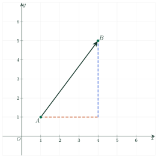
5.2 Operations on vectors by coordinatesBiểu thức tọa độ của các phép toán vectơ
With \(\vec u=(x;y)\), \(\vec v=(x';y')\) and a number \(k\)Với \(\vec u=(x;y)\), \(\vec v=(x';y')\) và số thực \(k\)
\(\vec u+\vec v=(x+x';\,y+y')\), \(\vec u-\vec v=(x-x';\,y-y')\), \(k\vec u=(kx;\,ky)\).
\(\vec u+\vec v=(x+x';\,y+y')\), \(\vec u-\vec v=(x-x';\,y-y')\), \(k\vec u=(kx;\,ky)\).
\(\vec v\) is collinear with \(\vec u\ne\vec 0\) \(\iff\) there is \(k\) with \(x'=kx,\ y'=ky\) \(\iff xy'-x'y=0\).
\(\vec v\) cùng phương với \(\vec u\ne\vec 0\) \(\iff\) có số \(k\) để \(x'=kx,\ y'=ky\) \(\iff xy'-x'y=0\).
Midpoint and centroidTrung điểm và trọng tâm
\(I\) is the midpoint of \(AB\); \(G\) is the centroid of triangle \(ABC\).
\(I\) là trung điểm đoạn \(AB\); \(G\) là trọng tâm tam giác \(ABC\).
Watch out!Lưu ý
\(\overrightarrow{AB}\) and \(\overrightarrow{BA}\) have opposite coordinates. When the second vector has a zero coordinate, use \(xy'-x'y=0\) instead of dividing by zero. \(A\), \(B\), \(C\) are collinear \(\iff\overrightarrow{AB}\), \(\overrightarrow{AC}\) are collinear.
\(\overrightarrow{AB}\) và \(\overrightarrow{BA}\) có tọa độ đối nhau. Khi có tọa độ bằng 0, dùng điều kiện \(xy'-x'y=0\) thay vì chia cho 0. \(A\), \(B\), \(C\) thẳng hàng \(\iff\overrightarrow{AB}\), \(\overrightarrow{AC}\) cùng phương.
6Worked ExamplesVí dụ có lời giải
ExampleVí dụ 1BasicCơ bản – Read coordinatesĐọc tọa độ
Write the coordinates of \(\vec u=3\vec i-2\vec j\), \(\vec v=-\vec j\) and of the point \(M\) with \(\overrightarrow{OM}=-\vec i+4\vec j\).
Viết tọa độ của \(\vec u=3\vec i-2\vec j\), \(\vec v=-\vec j\) và của điểm \(M\) biết \(\overrightarrow{OM}=-\vec i+4\vec j\).
Analysis: The number in front of \(\vec i\) is \(x\); the number in front of \(\vec j\) is \(y\). A missing term means 0.
Phân tích: Hệ số của \(\vec i\) là \(x\), hệ số của \(\vec j\) là \(y\); thiếu số hạng nào thì tọa độ đó bằng 0.
\(\vec u=3\vec i+(-2)\vec j\Rightarrow\vec u=(3;-2)\).
\(\vec u=3\vec i+(-2)\vec j\Rightarrow\vec u=(3;-2)\).
\(\vec v=0\vec i+(-1)\vec j\Rightarrow\vec v=(0;-1)\).
\(\vec v=0\vec i+(-1)\vec j\Rightarrow\vec v=(0;-1)\).
\(M\) has the coordinates of \(\overrightarrow{OM}\).
Tọa độ \(M\) là tọa độ của \(\overrightarrow{OM}\).
\(\vec u=(3;-2)\), \(\vec v=(0;-1)\), \(M(-1;4)\).
\(\vec u=(3;-2)\), \(\vec v=(0;-1)\), \(M(-1;4)\).
ExampleVí dụ 2BasicCơ bản – Distance on a mapKhoảng cách trên bản đồ
On a city map (1 unit = 100 m), the school is at \(A(-2;1)\) and the stadium at \(B(4;9)\). Find \(\overrightarrow{AB}\) and the straight-line distance between them in meters.
Trên bản đồ thành phố (1 đơn vị ứng với 100 m), trường học ở \(A(-2;1)\), sân vận động ở \(B(4;9)\). Tìm \(\overrightarrow{AB}\) và khoảng cách theo đường thẳng giữa hai nơi (mét).
Analysis: End minus start, then the length formula.
Phân tích: Lấy điểm cuối trừ điểm đầu, rồi dùng công thức độ dài.
\(\overrightarrow{AB}=(4-(-2);\,9-1)=(6;8)\).
\(\overrightarrow{AB}=(4-(-2);\,9-1)=(6;8)\).
\(AB=\sqrt{6^2+8^2}=\sqrt{100}=10\) units.
\(AB=\sqrt{6^2+8^2}=\sqrt{100}=10\) đơn vị.
\(\overrightarrow{AB}=(6;8)\); the distance is \(10\cdot100=1000\ \text{m}\).
\(\overrightarrow{AB}=(6;8)\); khoảng cách là \(10\cdot100=1000\ \text{m}\).
ExampleVí dụ 3IntermediateTrung bình – Operations and collinearityPhép toán và cùng phương
\(\vec a=(2;-1)\), \(\vec b=(-3;4)\), \(\vec c=(-6;3)\). Find \(2\vec a+\vec b\). Are \(\vec a\) and \(\vec c\) collinear? Are \(\vec a\) and \(\vec b\)?
Cho \(\vec a=(2;-1)\), \(\vec b=(-3;4)\), \(\vec c=(-6;3)\). Tính \(2\vec a+\vec b\). Hai vectơ \(\vec a\), \(\vec c\) có cùng phương không?
\(\vec a\), \(\vec b\) thì sao?
Analysis: Work coordinate by coordinate; for collinearity look for one number \(k\) for both coordinates.
Phân tích: Tính theo từng tọa độ; để xét cùng phương, tìm một số \(k\) dùng chung cho cả hai tọa độ.
\(2\vec a=(4;-2)\), so \(2\vec a+\vec b=(4-3;\,-2+4)=(1;2)\).
\(2\vec a=(4;-2)\) nên \(2\vec a+\vec b=(4-3;\,-2+4)=(1;2)\).
\(\vec c=(-6;3)=-3\cdot(2;-1)=-3\vec a\): collinear (opposite directions).
\(\vec c=(-6;3)=-3\cdot(2;-1)=-3\vec a\): cùng phương (ngược hướng).
\(2\cdot4-(-3)\cdot(-1)=8-3=5\ne0\): \(\vec a\), \(\vec b\) are not collinear.
\(2\cdot4-(-3)\cdot(-1)=8-3=5\ne0\): \(\vec a\), \(\vec b\) không cùng phương.
\(2\vec a+\vec b=(1;2)\); \(\vec a\parallel\vec c\) (collinear); \(\vec a\), \(\vec b\) are not collinear.
\(2\vec a+\vec b=(1;2)\); \(\vec a\), \(\vec c\) cùng phương; \(\vec a\), \(\vec b\) không cùng phương.
ExampleVí dụ 4IntermediateTrung bình – Midpoint, centroid, parallelogramTrung điểm, trọng tâm, hình bình hành
\(A(-1;1)\), \(B(3;2)\), \(C(1;-3)\). Find the midpoint \(M\) of \(BC\), the centroid \(G\) of triangle \(ABC\), and \(D\) so that \(ABCD\) is a parallelogram.
Cho \(A(-1;1)\), \(B(3;2)\), \(C(1;-3)\). Tìm trung điểm \(M\) của \(BC\), trọng tâm \(G\) của tam giác \(ABC\) và điểm \(D\) để \(ABCD\) là hình bình hành.
Analysis: For the parallelogram use \(\overrightarrow{AD}=\overrightarrow{BC}\) (careful with the order of the letters).
Phân tích: Với hình bình hành dùng \(\overrightarrow{AD}=\overrightarrow{BC}\) (chú ý thứ tự các đỉnh).
\(M\left(\dfrac{3+1}2;\dfrac{2-3}2\right)=\left(2;-\dfrac12\right)\).
\(M\left(\dfrac{3+1}2;\dfrac{2-3}2\right)=\left(2;-\dfrac12\right)\).
\(G\left(\dfrac{-1+3+1}3;\dfrac{1+2-3}3\right)=(1;0)\).
\(G\left(\dfrac{-1+3+1}3;\dfrac{1+2-3}3\right)=(1;0)\).
\(\overrightarrow{BC}=(-2;-5)\). \(\overrightarrow{AD}=\overrightarrow{BC}\) gives \(x_D+1=-2\), \(y_D-1=-5\).
\(\overrightarrow{BC}=(-2;-5)\). \(\overrightarrow{AD}=\overrightarrow{BC}\) cho \(x_D+1=-2\), \(y_D-1=-5\).
\(M\left(2;-\dfrac12\right)\), \(G(1;0)\), \(D(-3;-4)\).
\(M\left(2;-\dfrac12\right)\), \(G(1;0)\), \(D(-3;-4)\).
ExampleVí dụ 5AdvancedNâng cao – Will the drone pass the tower?Flycam có bay qua tháp không?
A drone flies in a straight line from \(A(1;1)\) through \(B(3;2)\) (unit: km). A radio tower stands at \(C(9;5)\). Will the drone fly over the tower? If yes, how far from \(A\) is the tower?
Một flycam bay theo đường thẳng từ \(A(1;1)\) qua \(B(3;2)\) (đơn vị km). Một trạm phát sóng đặt ở \(C(9;5)\). Flycam có bay qua trạm không? Nếu có, trạm cách \(A\) bao xa?
Analysis: The drone passes \(C\) exactly when \(A\), \(B\), \(C\) are collinear.
Phân tích: Flycam bay qua \(C\) khi và chỉ khi \(A\), \(B\), \(C\) thẳng hàng.
\(\overrightarrow{AB}=(2;1)\), \(\overrightarrow{AC}=(8;4)=4\overrightarrow{AB}\).
\(\overrightarrow{AB}=(2;1)\), \(\overrightarrow{AC}=(8;4)=4\overrightarrow{AB}\).
So \(A\), \(B\), \(C\) are collinear and \(C\) is on the same side as \(B\) (because \(k=4\gt0\)).
Vậy \(A\), \(B\), \(C\) thẳng hàng và \(C\) cùng phía với \(B\) so với \(A\) (vì \(k=4\gt0\)).
\(AC=\sqrt{8^2+4^2}=\sqrt{80}=4\sqrt5\approx8.94\) km.
\(AC=\sqrt{8^2+4^2}=\sqrt{80}=4\sqrt5\approx8{,}94\) km.
Yes; the tower is \(4\sqrt5\approx8.94\) km from \(A\).
Có; trạm cách \(A\) khoảng \(4\sqrt5\approx8{,}94\) km.
7PracticeBài tập luyện tập
A. Multiple ChoiceA. Trắc nghiệm nhiều lựa chọn
On a map (1 unit = 100 m), a bus stop is at \(A(1;\,2)\) and a market at \(B(4;\,6)\). The vector \(\overrightarrow{AB}\) is…
Trên bản đồ (1 đơn vị ứng với 100 m), trạm xe buýt ở \(A(1;\,2)\), chợ ở \(B(4;\,6)\). Vectơ \(\overrightarrow{AB}\) có tọa độ…
Answer: c. End minus start: \((3;\,4)\).
Đáp án c. Điểm cuối trừ điểm đầu: \((3;\,4)\).
\(\vec a=(1;\,3)\), \(\vec b=(2;\,-1)\). The coordinates of \(2\vec a+\vec b\) are…
Cho \(\vec a=(1;\,3)\), \(\vec b=(2;\,-1)\). Tọa độ của \(2\vec a+\vec b\) là…
Answer: b. Scale, then add coordinate by coordinate.
Đáp án b. Nhân với số trước, rồi cộng theo từng tọa độ.
A garden \(ABCD\) is a parallelogram with \(A(0;\,0)\), \(B(3;\,1)\), \(C(5;\,4)\). The corner \(D\) is at…
Một mảnh vườn \(ABCD\) hình bình hành có \(A(0;\,0)\), \(B(3;\,1)\), \(C(5;\,4)\). Góc vườn \(D\) có tọa độ…
Answer: a. \(\overrightarrow{AD}=\overrightarrow{BC}\Rightarrow D=A+C-B=(2;\,3)\).
Đáp án a. \(\overrightarrow{AD}=\overrightarrow{BC}\Rightarrow D=A+C-B=(2;\,3)\).
The figure shows the vector \(\vec u\) in the coordinate plane. Its coordinates are…
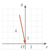
Hình vẽ biểu diễn vectơ \(\vec u\) trong mặt phẳng tọa độ. Tọa độ của \(\vec u\) là…
Answer: d. From the start to the end: \(1\) horizontally, \(-5\) vertically: \(\vec u=(1;\,-5)\).
Đáp án d. Từ điểm đầu tới điểm cuối: \(1\) theo phương ngang, \(-5\) theo phương dọc: \(\vec u=(1;\,-5)\).
Read the coordinates of \(A\) and \(B\) in the figure. Then \(|\overrightarrow{AB}|=\)…
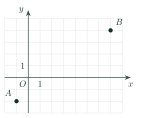
Đọc tọa độ của \(A\), \(B\) trên hình. Khi đó \(|\overrightarrow{AB}|=\)…
Answer: b. \(A(-1;\,-2)\), \(B(7;\,4)\), \(\overrightarrow{AB}=(8;\,6)\), \(AB=\sqrt{8^2+6^2}=10\).
Đáp án b. \(A(-1;\,-2)\), \(B(7;\,4)\), \(\overrightarrow{AB}=(8;\,6)\), \(AB=\sqrt{8^2+6^2}=10\).
B. True or FalseB. Đúng hoặc sai
\(\vec u=(2;\,-3)\) and \(\vec w=(-4;\,6)\) are collinear.
Hai vectơ \(\vec u=(2;\,-3)\) và \(\vec w=(-4;\,6)\) cùng phương.
\(xy'-x'y=2\cdot6--4\cdot-3=0\).
\(xy'-x'y=2\cdot6--4\cdot-3=0\).
Three friends live at \(E(0;\,0)\), \(F(6;\,3)\), \(H(3;\,6)\). They want to meet at the centroid of triangle \(EFH\). The meeting point is \((3;\,3)\).
Ba bạn ở \(E(0;\,0)\), \(F(6;\,3)\), \(H(3;\,6)\) hẹn gặp tại trọng tâm tam giác \(EFH\). Điểm hẹn là \((3;\,3)\).
The centroid is \((3;\,3)\).
Trọng tâm là \((3;\,3)\).
Points \(A\), \(B\), \(C\) are shown on the coordinate grid. \(C\) is the midpoint of \(AB\).
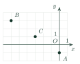
Các điểm \(A\), \(B\), \(C\) được biểu diễn trên lưới tọa độ. \(C\) là trung điểm của \(AB\).
The midpoint of \(AB\) is \((-3;\,1)\); \(C(-3;\,1)\).
Trung điểm của \(AB\) là \((-3;\,1)\); \(C(-3;\,1)\).
C. Short AnswerC. Trả lời ngắn
On a map (1 unit = 100 m), \(A(1;\,2)\) and \(B(4;\,6)\). Find the real distance \(AB\) in meters.
Trên bản đồ (1 đơn vị ứng với 100 m) cho \(A(1;\,2)\), \(B(4;\,6)\). Tính khoảng cách thực tế \(AB\) (mét).
Enter a number.
Nhập một số.
\(AB=\sqrt{3^2+4^2}=5\) units \(=500\) m.
\(AB=\sqrt{3^2+4^2}=5\) đơn vị \(=500\) m.
Points \(A(0;\,1)\), \(B(2;\,3)\) and \(C(4;\,m)\). Find \(m\) so that \(A\), \(B\), \(C\) are collinear.
Cho \(A(0;\,1)\), \(B(2;\,3)\), \(C(4;\,m)\). Tìm \(m\) để ba điểm \(A\), \(B\), \(C\) thẳng hàng.
Enter a number.
Nhập một số.
\(\overrightarrow{AB}=(2;\,2)\), \(\overrightarrow{AC}=(4;\,m-1)\) collinear gives \(m=5\).
\(\overrightarrow{AB}=(2;\,2)\), \(\overrightarrow{AC}=(4;\,m-1)\) cùng phương cho \(m=5\).
A. Multiple ChoiceA. Trắc nghiệm nhiều lựa chọn
On a map (1 unit = 50 m), a bus stop is at \(A(-2;\,3)\) and a market at \(B(4;\,-5)\). The vector \(\overrightarrow{AB}\) is…
Trên bản đồ (1 đơn vị ứng với 50 m), trạm xe buýt ở \(A(-2;\,3)\), chợ ở \(B(4;\,-5)\). Vectơ \(\overrightarrow{AB}\) có tọa độ…
Answer: d. End minus start: \((6;\,-8)\).
Đáp án d. Điểm cuối trừ điểm đầu: \((6;\,-8)\).
\(\vec a=(-2;\,4)\), \(\vec b=(3;\,1)\). The coordinates of \(3\vec a-2\vec b\) are…
Cho \(\vec a=(-2;\,4)\), \(\vec b=(3;\,1)\). Tọa độ của \(3\vec a-2\vec b\) là…
Answer: a. Scale, then add coordinate by coordinate.
Đáp án a. Nhân với số trước, rồi cộng theo từng tọa độ.
A garden \(ABCD\) is a parallelogram with \(A(1;\,-2)\), \(B(4;\,0)\), \(C(6;\,5)\). The corner \(D\) is at…
Một mảnh vườn \(ABCD\) hình bình hành có \(A(1;\,-2)\), \(B(4;\,0)\), \(C(6;\,5)\). Góc vườn \(D\) có tọa độ…
Answer: a. \(\overrightarrow{AD}=\overrightarrow{BC}\Rightarrow D=A+C-B=(3;\,3)\).
Đáp án a. \(\overrightarrow{AD}=\overrightarrow{BC}\Rightarrow D=A+C-B=(3;\,3)\).
Read the coordinates of \(\vec u\) from the grid.
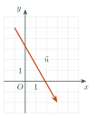
Đọc tọa độ của \(\vec u\) trên lưới ô vuông.
Answer: d. From the start to the end: \(4\) horizontally, \(-7\) vertically: \(\vec u=(4;\,-7)\).
Đáp án d. Từ điểm đầu tới điểm cuối: \(4\) theo phương ngang, \(-7\) theo phương dọc: \(\vec u=(4;\,-7)\).
From the figure, the length of \(\overrightarrow{AB}\) is…
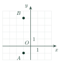
Theo hình vẽ, độ dài của \(\overrightarrow{AB}\) là…
Answer: a. \(A(-1;\,-1)\), \(B(-1;\,4)\), \(\overrightarrow{AB}=(0;\,5)\), \(AB=\sqrt{0^2+5^2}=5\).
Đáp án a. \(A(-1;\,-1)\), \(B(-1;\,4)\), \(\overrightarrow{AB}=(0;\,5)\), \(AB=\sqrt{0^2+5^2}=5\).
B. True or FalseB. Đúng hoặc sai
\(\vec u=(3;\,1)\) and \(\vec w=(6;\,3)\) are collinear.
Hai vectơ \(\vec u=(3;\,1)\) và \(\vec w=(6;\,3)\) cùng phương.
\(xy'-x'y=3\cdot3-6\cdot1=3\).
\(xy'-x'y=3\cdot3-6\cdot1=3\).
Three friends live at \(E(-1;\,2)\), \(F(4;\,5)\), \(H(3;\,-1)\). They want to meet at the centroid of triangle \(EFH\). The meeting point is \((3;\,2)\).
Ba bạn ở \(E(-1;\,2)\), \(F(4;\,5)\), \(H(3;\,-1)\) hẹn gặp tại trọng tâm tam giác \(EFH\). Điểm hẹn là \((3;\,2)\).
The centroid is \((2;\,2)\).
Trọng tâm là \((2;\,2)\).
Points \(A\), \(B\), \(C\) are shown on the coordinate grid. \(\overrightarrow{AC}=\overrightarrow{CB}\).
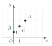
Các điểm \(A\), \(B\), \(C\) được biểu diễn trên lưới tọa độ. \(\overrightarrow{AC}=\overrightarrow{CB}\).
The midpoint of \(AB\) is \((1;\,2)\); \(C(1;\,2)\).
Trung điểm của \(AB\) là \((1;\,2)\); \(C(1;\,2)\).
C. Short AnswerC. Trả lời ngắn
On a map (1 unit = 50 m), \(A(-2;\,3)\) and \(B(4;\,-5)\). Find the real distance \(AB\) in meters.
Trên bản đồ (1 đơn vị ứng với 50 m) cho \(A(-2;\,3)\), \(B(4;\,-5)\). Tính khoảng cách thực tế \(AB\) (mét).
Enter a number.
Nhập một số.
\(AB=\sqrt{6^2+8^2}=10\) units \(=500\) m.
\(AB=\sqrt{6^2+8^2}=10\) đơn vị \(=500\) m.
Points \(A(1;\,-1)\), \(B(3;\,3)\) and \(C(5;\,m)\). Find \(m\) so that \(A\), \(B\), \(C\) are collinear.
Cho \(A(1;\,-1)\), \(B(3;\,3)\), \(C(5;\,m)\). Tìm \(m\) để ba điểm \(A\), \(B\), \(C\) thẳng hàng.
Enter a number.
Nhập một số.
\(\overrightarrow{AB}=(2;\,4)\), \(\overrightarrow{AC}=(4;\,m+1)\) collinear gives \(m=7\).
\(\overrightarrow{AB}=(2;\,4)\), \(\overrightarrow{AC}=(4;\,m+1)\) cùng phương cho \(m=7\).
A. Multiple ChoiceA. Trắc nghiệm nhiều lựa chọn
On a map (1 unit = 20 m), a bus stop is at \(A(5;\,-1)\) and a market at \(B(-7;\,4)\). The vector \(\overrightarrow{AB}\) is…
Trên bản đồ (1 đơn vị ứng với 20 m), trạm xe buýt ở \(A(5;\,-1)\), chợ ở \(B(-7;\,4)\). Vectơ \(\overrightarrow{AB}\) có tọa độ…
Answer: a. End minus start: \((-12;\,5)\).
Đáp án a. Điểm cuối trừ điểm đầu: \((-12;\,5)\).
\(\vec a=(4;\,-1)\), \(\vec b=(-2;\,5)\). The coordinates of \(-\vec a+3\vec b\) are…
Cho \(\vec a=(4;\,-1)\), \(\vec b=(-2;\,5)\). Tọa độ của \(-\vec a+3\vec b\) là…
Answer: a. Scale, then add coordinate by coordinate.
Đáp án a. Nhân với số trước, rồi cộng theo từng tọa độ.
A garden \(ABCD\) is a parallelogram with \(A(-3;\,1)\), \(B(2;\,-1)\), \(C(4;\,3)\). The corner \(D\) is at…
Một mảnh vườn \(ABCD\) hình bình hành có \(A(-3;\,1)\), \(B(2;\,-1)\), \(C(4;\,3)\). Góc vườn \(D\) có tọa độ…
Answer: b. \(\overrightarrow{AD}=\overrightarrow{BC}\Rightarrow D=A+C-B=(-1;\,5)\).
Đáp án b. \(\overrightarrow{AD}=\overrightarrow{BC}\Rightarrow D=A+C-B=(-1;\,5)\).
Using the grid (each square has side 1), \(\vec u=\)…
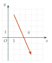
Dựa vào lưới ô vuông (mỗi ô cạnh 1), \(\vec u=\)…
Answer: d. From the start to the end: \(3\) horizontally, \(-7\) vertically: \(\vec u=(3;\,-7)\).
Đáp án d. Từ điểm đầu tới điểm cuối: \(3\) theo phương ngang, \(-7\) theo phương dọc: \(\vec u=(3;\,-7)\).
Using the grid, find \(AB\).
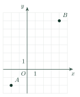
Dựa vào lưới ô vuông, tính \(AB\).
Answer: b. \(A(-2;\,-2)\), \(B(4;\,6)\), \(\overrightarrow{AB}=(6;\,8)\), \(AB=\sqrt{6^2+8^2}=10\).
Đáp án b. \(A(-2;\,-2)\), \(B(4;\,6)\), \(\overrightarrow{AB}=(6;\,8)\), \(AB=\sqrt{6^2+8^2}=10\).
B. True or FalseB. Đúng hoặc sai
\(\vec u=(-5;\,2)\) and \(\vec w=(10;\,-4)\) are collinear.
Hai vectơ \(\vec u=(-5;\,2)\) và \(\vec w=(10;\,-4)\) cùng phương.
\(xy'-x'y=-5\cdot-4-10\cdot2=0\).
\(xy'-x'y=-5\cdot-4-10\cdot2=0\).
Three friends live at \(E(2;\,-3)\), \(F(-4;\,1)\), \(H(5;\,8)\). They want to meet at the centroid of triangle \(EFH\). The meeting point is \((1;\,2)\).
Ba bạn ở \(E(2;\,-3)\), \(F(-4;\,1)\), \(H(5;\,8)\) hẹn gặp tại trọng tâm tam giác \(EFH\). Điểm hẹn là \((1;\,2)\).
The centroid is \((1;\,2)\).
Trọng tâm là \((1;\,2)\).
Points \(A\), \(B\), \(C\) are shown on the coordinate grid. \(\overrightarrow{CA}+\overrightarrow{CB}=\vec0\).
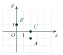
Các điểm \(A\), \(B\), \(C\) được biểu diễn trên lưới tọa độ. \(\overrightarrow{CA}+\overrightarrow{CB}=\vec0\).
The midpoint of \(AB\) is \((1;\,0)\); \(C(2;\,0)\).
Trung điểm của \(AB\) là \((1;\,0)\); \(C(2;\,0)\).
C. Short AnswerC. Trả lời ngắn
On a map (1 unit = 20 m), \(A(5;\,-1)\) and \(B(-7;\,4)\). Find the real distance \(AB\) in meters.
Trên bản đồ (1 đơn vị ứng với 20 m) cho \(A(5;\,-1)\), \(B(-7;\,4)\). Tính khoảng cách thực tế \(AB\) (mét).
Enter a number.
Nhập một số.
\(AB=\sqrt{12^2+5^2}=13\) units \(=260\) m.
\(AB=\sqrt{12^2+5^2}=13\) đơn vị \(=260\) m.
Points \(A(-2;\,4)\), \(B(1;\,-2)\) and \(C(4;\,m)\). Find \(m\) so that \(A\), \(B\), \(C\) are collinear.
Cho \(A(-2;\,4)\), \(B(1;\,-2)\), \(C(4;\,m)\). Tìm \(m\) để ba điểm \(A\), \(B\), \(C\) thẳng hàng.
Enter a number.
Nhập một số.
\(\overrightarrow{AB}=(3;\,-6)\), \(\overrightarrow{AC}=(6;\,m-4)\) collinear gives \(m=-8\).
\(\overrightarrow{AB}=(3;\,-6)\), \(\overrightarrow{AC}=(6;\,m-4)\) cùng phương cho \(m=-8\).
D. Self-practice: Multiple ChoiceD. Tự luyện: trắc nghiệm
\(\vec a=(-3;\,-3)\), \(\vec b=(2;\,-2)\), \(\vec c=(-1;\,-5)\). If \(\vec c=x\vec a+y\vec b\), then…
\(\vec a=(-3;\,-3)\), \(\vec b=(2;\,-2)\), \(\vec c=(-1;\,-5)\). Nếu \(\vec c=x\vec a+y\vec b\) thì…
Answer: b. Solve \(-1=-3x+2y\), \(-5=-3x-2y\): \(x=1\), \(y=1\).
Đáp án b. Giải hệ \(-1=-3x+2y\), \(-5=-3x-2y\): \(x=1\), \(y=1\).
Points \(A(4;\,-1)\), \(B(-2;\,2)\) are shown in the figure. The point \(M\) on the axis \(Ox\) with \(A\), \(B\), \(M\) collinear is…
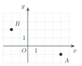
Các điểm \(A(4;\,-1)\), \(B(-2;\,2)\) như hình vẽ. Điểm \(M\) trên trục \(Ox\) sao cho \(A\), \(B\), \(M\) thẳng hàng là…
Answer: b. \(M(m;0)\): \(\overrightarrow{AM}\), \(\overrightarrow{AB}\) collinear gives \(m=2\).
Đáp án b. \(M(m;0)\): \(\overrightarrow{AM}\), \(\overrightarrow{AB}\) cùng phương cho \(m=2\).
\(C\) is the point symmetric to \(A\) with respect to \(B\) (figure). Then…
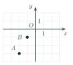
\(C\) là điểm đối xứng với \(A\) qua \(B\) (hình vẽ). Khi đó…
Answer: b. \(A(-2;\,-3)\), \(B(-1;\,-1)\): \(C=2B-A=(0;\,1)\).
Đáp án b. \(A(-2;\,-3)\), \(B(-1;\,-1)\): \(C=2B-A=(0;\,1)\).
For the points \(A\), \(B\) in the figure a student wrote \(\overrightarrow{AB}=(3;\,-1)\). Which comment is correct?
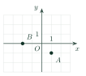
Với hai điểm \(A\), \(B\) trong hình, một bạn viết \(\overrightarrow{AB}=(3;\,-1)\). Nhận xét nào đúng?
Answer: b. \(A(1;\,-1)\), \(B(-2;\,0)\): \(\overrightarrow{AB}=(x_B-x_A;\,y_B-y_A)=(-3;\,1)\).
Đáp án b. \(A(1;\,-1)\), \(B(-2;\,0)\): \(\overrightarrow{AB}=(x_B-x_A;\,y_B-y_A)=(-3;\,1)\).
Triangle \(ABC\) has \(A(2;\,1)\), \(B(5;\,0)\) and centroid \(G(1;\,-1)\). Then…
Tam giác \(ABC\) có \(A(2;\,1)\), \(B(5;\,0)\) và trọng tâm \(G(1;\,-1)\). Khi đó…
Answer: b. \(C=3G-A-B=(-4;\,-4)\).
Đáp án b. \(C=3G-A-B=(-4;\,-4)\).
Points \(A\), \(B\) are shown in the figure. The point \(M\) with \(\overrightarrow{MA}=-3\,\overrightarrow{MB}\) is…
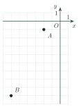
Các điểm \(A\), \(B\) như hình vẽ. Điểm \(M\) thỏa mãn \(\overrightarrow{MA}=-3\,\overrightarrow{MB}\) là…
Answer: a. \(A(-2;\,-1)\), \(B(-6;\,-9)\): \(M=\dfrac{A+3B}{4}=(-5;\,-7)\).
Đáp án a. \(A(-2;\,-1)\), \(B(-6;\,-9)\): \(M=\dfrac{A+3B}{4}=(-5;\,-7)\).
The vector \(\vec v\) has the same direction as \(\vec u=(-3;\,4)\) and \(|\vec v|=10\). Then \(\vec v=\)…
Vectơ \(\vec v\) cùng hướng với \(\vec u=(-3;\,4)\) và \(|\vec v|=10\). Khi đó \(\vec v=\)…
Answer: c. \(|\vec u|=5\), so \(\vec v=2\vec u=(-6;\,8)\).
Đáp án c. \(|\vec u|=5\) nên \(\vec v=2\vec u=(-6;\,8)\).
Read the vertices of triangle \(ABC\) from the figure. Its perimeter is…
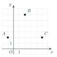
Đọc tọa độ các đỉnh tam giác \(ABC\) trên hình. Chu vi tam giác là…
Answer: c. \(AB=5\), \(BC=5\), \(CA=6\); perimeter \(16\).
Đáp án c. \(AB=5\), \(BC=5\), \(CA=6\); chu vi \(16\).
D. Self-practice: Multiple ChoiceD. Tự luyện: trắc nghiệm
Write \(\vec c=(6;\,6)\) as \(x\vec a+y\vec b\) with \(\vec a=(0;\,-2)\), \(\vec b=(3;\,2)\).
Biểu diễn \(\vec c=(6;\,6)\) dưới dạng \(x\vec a+y\vec b\) với \(\vec a=(0;\,-2)\), \(\vec b=(3;\,2)\).
Answer: a. Solve \(6=0x+3y\), \(6=-2x+2y\): \(x=-1\), \(y=2\).
Đáp án a. Giải hệ \(6=0x+3y\), \(6=-2x+2y\): \(x=-1\), \(y=2\).
Points \(A(0;\,1)\), \(B(-2;\,-1)\) are shown in the figure. The point \(M\) on the axis \(Ox\) with \(A\), \(B\), \(M\) collinear is…
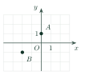
Các điểm \(A(0;\,1)\), \(B(-2;\,-1)\) như hình vẽ. Điểm \(M\) trên trục \(Ox\) sao cho \(A\), \(B\), \(M\) thẳng hàng là…
Answer: b. \(M(m;0)\): \(\overrightarrow{AM}\), \(\overrightarrow{AB}\) collinear gives \(m=-1\).
Đáp án b. \(M(m;0)\): \(\overrightarrow{AM}\), \(\overrightarrow{AB}\) cùng phương cho \(m=-1\).
Find the point \(C\) such that \(B\) is the midpoint of \(AC\) (figure).
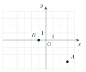
Tìm điểm \(C\) sao cho \(B\) là trung điểm của \(AC\) (hình vẽ).
Answer: d. \(A(3;\,-3)\), \(B(-1;\,0)\): \(C=2B-A=(-5;\,3)\).
Đáp án d. \(A(3;\,-3)\), \(B(-1;\,0)\): \(C=2B-A=(-5;\,3)\).
For the points \(A\), \(B\) in the figure a student wrote \(\overrightarrow{AB}=(-2;\,-3)\). Which comment is correct?
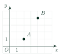
Với hai điểm \(A\), \(B\) trong hình, một bạn viết \(\overrightarrow{AB}=(-2;\,-3)\). Nhận xét nào đúng?
Answer: a. \(A(2;\,1)\), \(B(4;\,4)\): \(\overrightarrow{AB}=(x_B-x_A;\,y_B-y_A)=(2;\,3)\).
Đáp án a. \(A(2;\,1)\), \(B(4;\,4)\): \(\overrightarrow{AB}=(x_B-x_A;\,y_B-y_A)=(2;\,3)\).
Find the vertex \(C\) of triangle \(ABC\), knowing \(A(5;\,1)\), \(B(2;\,-2)\) and the centroid \(G(3;\,0)\).
Tìm đỉnh \(C\) của tam giác \(ABC\), biết \(A(5;\,1)\), \(B(2;\,-2)\) và trọng tâm \(G(3;\,0)\).
Answer: b. \(C=3G-A-B=(2;\,1)\).
Đáp án b. \(C=3G-A-B=(2;\,1)\).
Read \(A\), \(B\) from the grid and find \(M\) such that \(\overrightarrow{MA}=-2\,\overrightarrow{MB}\).
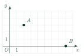
Đọc tọa độ \(A\), \(B\) trên lưới rồi tìm \(M\) sao cho \(\overrightarrow{MA}=-2\,\overrightarrow{MB}\).
Answer: c. \(A(2;\,3)\), \(B(8;\,0)\): \(M=\dfrac{A+2B}{3}=(6;\,1)\).
Đáp án c. \(A(2;\,3)\), \(B(8;\,0)\): \(M=\dfrac{A+2B}{3}=(6;\,1)\).
The vector \(\vec v\) has the opposite direction to \(\vec u=(5;\,12)\) and \(|\vec v|=26\). Then \(\vec v=\)…
Vectơ \(\vec v\) ngược hướng với \(\vec u=(5;\,12)\) và \(|\vec v|=26\). Khi đó \(\vec v=\)…
Answer: d. \(|\vec u|=13\), so \(\vec v=-2\vec u=(-10;\,-24)\).
Đáp án d. \(|\vec u|=13\) nên \(\vec v=-2\vec u=(-10;\,-24)\).
Using the coordinate grid, find the perimeter of triangle \(ABC\).
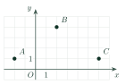
Dựa vào lưới tọa độ, tính chu vi tam giác \(ABC\).
Answer: a. \(AB=5\), \(BC=5\), \(CA=8\); perimeter \(18\).
Đáp án a. \(AB=5\), \(BC=5\), \(CA=8\); chu vi \(18\).
D. Self-practice: Multiple ChoiceD. Tự luyện: trắc nghiệm
Find \(x\), \(y\) such that \(x\vec a+y\vec b=\vec c\), where \(\vec a=(-3;\,0)\), \(\vec b=(-1;\,2)\), \(\vec c=(-1;\,-4)\).
Tìm \(x\), \(y\) sao cho \(x\vec a+y\vec b=\vec c\), với \(\vec a=(-3;\,0)\), \(\vec b=(-1;\,2)\), \(\vec c=(-1;\,-4)\).
Answer: a. Solve \(-1=-3x-1y\), \(-4=0x+2y\): \(x=1\), \(y=-2\).
Đáp án a. Giải hệ \(-1=-3x-1y\), \(-4=0x+2y\): \(x=1\), \(y=-2\).
Points \(A(4;\,-4)\), \(B(1;\,2)\) are shown in the figure. The point \(M\) on the axis \(Ox\) with \(A\), \(B\), \(M\) collinear is…
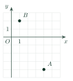
Các điểm \(A(4;\,-4)\), \(B(1;\,2)\) như hình vẽ. Điểm \(M\) trên trục \(Ox\) sao cho \(A\), \(B\), \(M\) thẳng hàng là…
Answer: d. \(M(m;0)\): \(\overrightarrow{AM}\), \(\overrightarrow{AB}\) collinear gives \(m=2\).
Đáp án d. \(M(m;0)\): \(\overrightarrow{AM}\), \(\overrightarrow{AB}\) cùng phương cho \(m=2\).
The reflection of \(A\) through the point \(B\) (figure) is…
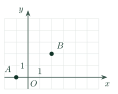
Điểm đối xứng với \(A\) qua điểm \(B\) (hình vẽ) là…
Answer: c. \(A(-1;\,0)\), \(B(2;\,2)\): \(C=2B-A=(5;\,4)\).
Đáp án c. \(A(-1;\,0)\), \(B(2;\,2)\): \(C=2B-A=(5;\,4)\).
For the points \(A\), \(B\) in the figure a student wrote \(\overrightarrow{AB}=(0;\,1)\). Which comment is correct?
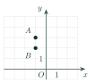
Với hai điểm \(A\), \(B\) trong hình, một bạn viết \(\overrightarrow{AB}=(0;\,1)\). Nhận xét nào đúng?
Answer: d. \(A(-1;\,3)\), \(B(-1;\,2)\): \(\overrightarrow{AB}=(x_B-x_A;\,y_B-y_A)=(0;\,-1)\).
Đáp án d. \(A(-1;\,3)\), \(B(-1;\,2)\): \(\overrightarrow{AB}=(x_B-x_A;\,y_B-y_A)=(0;\,-1)\).
The centroid of triangle \(ABC\) is \(G(1;\,3)\) with \(A(5;\,0)\), \(B(-4;\,-4)\). The third vertex is…
Trọng tâm tam giác \(ABC\) là \(G(1;\,3)\), với \(A(5;\,0)\), \(B(-4;\,-4)\). Đỉnh còn lại là…
Answer: d. \(C=3G-A-B=(2;\,13)\).
Đáp án d. \(C=3G-A-B=(2;\,13)\).
Using the figure, the point \(M\) satisfying \(\overrightarrow{MA}=-2\,\overrightarrow{MB}\) has coordinates…
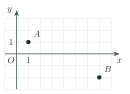
Dựa vào hình vẽ, điểm \(M\) thỏa mãn \(\overrightarrow{MA}=-2\,\overrightarrow{MB}\) có tọa độ…
Answer: d. \(A(1;\,1)\), \(B(7;\,-2)\): \(M=\dfrac{A+2B}{3}=(5;\,-1)\).
Đáp án d. \(A(1;\,1)\), \(B(7;\,-2)\): \(M=\dfrac{A+2B}{3}=(5;\,-1)\).
The vector \(\vec v\) has the same direction as \(\vec u=(-8;\,6)\) and \(|\vec v|=30\). Then \(\vec v=\)…
Vectơ \(\vec v\) cùng hướng với \(\vec u=(-8;\,6)\) và \(|\vec v|=30\). Khi đó \(\vec v=\)…
Answer: b. \(|\vec u|=10\), so \(\vec v=3\vec u=(-24;\,18)\).
Đáp án b. \(|\vec u|=10\) nên \(\vec v=3\vec u=(-24;\,18)\).
The perimeter of triangle \(ABC\) shown on the grid is…
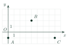
Chu vi tam giác \(ABC\) trên lưới tọa độ là…
Answer: d. \(AB=5\), \(BC=5\), \(CA=8\); perimeter \(18\).
Đáp án d. \(AB=5\), \(BC=5\), \(CA=8\); chu vi \(18\).
8Common MistakesLỗi thường gặp
Start minus end. \(\overrightarrow{AB}=B-A\) (end minus start); \(A-B\) gives \(\overrightarrow{BA}\).
Lấy điểm đầu trừ điểm cuối. \(\overrightarrow{AB}=B-A\) (cuối trừ đầu); \(A-B\) cho \(\overrightarrow{BA}\).
Adding the coordinates in the length. \(|(3;4)|=\sqrt{9+16}=5\), not \(3+4=7\).
Cộng tọa độ khi tính độ dài. \(|(3;4)|=\sqrt{9+16}=5\), không phải \(3+4=7\).
Wrong order of the parallelogram. For \(ABCD\) use \(\overrightarrow{AD}=\overrightarrow{BC}\) (or \(\overrightarrow{AB}=\overrightarrow{DC}\)), so \(D=A+C-B\).
Sai thứ tự đỉnh hình bình hành. Với \(ABCD\) dùng \(\overrightarrow{AD}=\overrightarrow{BC}\) (hoặc \(\overrightarrow{AB}=\overrightarrow{DC}\)) nên \(D=A+C-B\).
Two different ratios. Collinear vectors need the same \(k\) for both coordinates.
Hai tỉ số khác nhau. Hai vectơ cùng phương cần cùng một số \(k\) cho cả hai tọa độ.
9Lesson SummaryTổng kết
\(\vec u=x\vec i+y\vec j\iff\vec u=(x;y)\); \(M(x;y)\iff\overrightarrow{OM}=(x;y)\).
\(\vec u=x\vec i+y\vec j\iff\vec u=(x;y)\); \(M(x;y)\iff\overrightarrow{OM}=(x;y)\).
\(\overrightarrow{AB}=(x_B-x_A;\,y_B-y_A)\), \(AB=\sqrt{(x_B-x_A)^2+(y_B-y_A)^2}\).
\(\overrightarrow{AB}=(x_B-x_A;\,y_B-y_A)\), \(AB=\sqrt{(x_B-x_A)^2+(y_B-y_A)^2}\).
Sum, difference and \(k\vec u\) are done coordinate by coordinate; collinear \(\iff xy'-x'y=0\).
Tổng, hiệu, \(k\vec u\) tính theo từng tọa độ; cùng phương \(\iff xy'-x'y=0\).
Midpoint: average of 2 points; centroid: average of 3 points. Key words: coordinates, abscissa, ordinate, collinear.
Trung điểm: trung bình cộng 2 điểm; trọng tâm: trung bình cộng 3 điểm. Từ cần nhớ (chạm vào để xem tiếng Anh): tọa độ; hoành độ; tung độ; thẳng hàng.